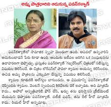

.jpg)
power star pawan kalyan
true leader of andra pradesh
Humanitarian works
- In 2012, he donated Rs.500,000 to support Olympic sports shooter Rekha Chalichemala
- In 2013, he reportedly donated Rs.2 million to the Natural Calamity Management Fund for those impacted by the floods at Uttarakhand.[42]
- On 14 October 2014, he announced a donation of Rs.5 million to the Chief Minister's relief fund for taking up relief operations in the aftermath of cyclone Hudhud in Andhra Pradesh.
.jpg)
- Pawan Kalyan gave 1 lakh rupees to the character artist Pavala Shyamala who suffered from a fatal illness.

- On 27 July 2013, he donated 1 lakh rupees to Jesus old age home at Pandurangapuram in Khammam district in Telangana
.jpg)
- Pawan Kalyan helped a biker, Gota Satish Kumar with 5 lakh rupees who lost his legs in an accident.[46]
- Pawan Kalyan donated Rs.5lakhs to differently-abled T20 Cricket tournament and 1 lakh for each team
- On April 10, 2018 he announced in his twitter that he will give a 10 lakh cheque to Sri Venkata Rahul Ragala for achieving Gold Medal in Common Wealth Games & making our Mother land "Bharath" Proud
.jpg)
.jpg)
.jpg)
.jpg)
.jpg)
.jpg)